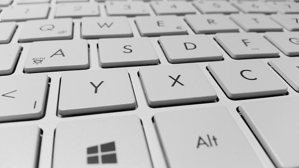

6th Grade Learing
One of the most important skills that I have learned in the atm program is typing. Another really important thing that I learned was welcome to the web which taught me internet safety. On the other hand, I also learned really fun programs like Powerpoint, Microsoft, Excel, Canva,Edmodo, Tagul, Diamonte, Pixlr and Piktochart. Another thing I learned was how to make Newsletter and how to code art.

Photoshop, Sketchup, Floorplanner,Illustrator, and Bagelist are the key things that I learned in 7th grade. I also learned about Khan academy, Google Drive, and Google Slides.
This year, some new things that i learned were regarding Website design. Another thing that I learned was how to use Garageband, Storyboard That, IMovie, and Dash. Last year I learned some photography techniques but this year I expanded my knowledge even more since I learned more filming techniques.
Personally, I love ATM even though it was challenging at times. I’m so glad I chose this program for my elective because it’s a great experience. I learned so many thing that I didn’t know or didn’t think I would ever know. Everything I learned is useful not only for school but useful for the future.
7th Grade Learing
8th Grade Learing
Reflection Of The Program
{kind=link}